01
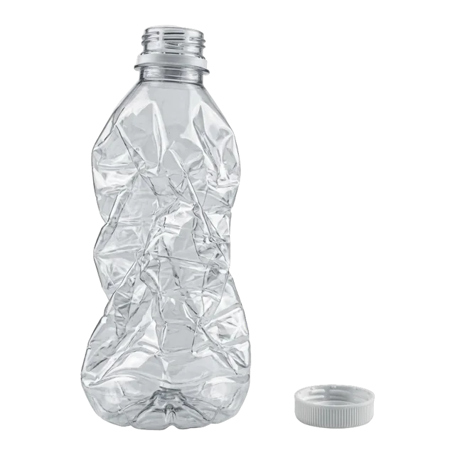
Открути крышку. Сомни бутылку.
Два простых действия перед тем, как отправить пластиковую бутылку в контейнер.
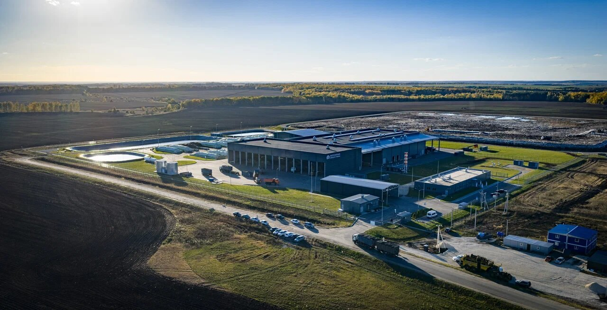
После контейнера начинается следующий этап. Мы собираем общий поток, сортируем его и группируем материалы, которые можем вернуть в переработку. А ещё показываем, как устроена эта система и как ежедневные привычки каждого помогают ей работать эффективнее.
Прокрути страницу, подготовь бутылку к контейнеру и узнай, что можно сделать дома.
Крышка и бутылка сделаны из разных видов пластика. Лучше разделить их заранее.
Перед тем как выбросить бутылку, освободи её от жидкости. Так содержимое не попадёт на другие материалы в контейнере и на линии.
Смятая бутылка занимает меньше места и удобнее проходит дальнейшую сортировку.
Готово. Бутылка подготовлена к сортировке на заводе.
Не нужно становиться экспертом по переработке. Вклад каждого начинается с нескольких простых привычек дома. Они помогают лучше подготовить содержимое контейнера к дальнейшей сортировке, а некоторым материалам становиться ресурсом.

Два простых действия перед тем, как отправить пластиковую бутылку в контейнер.
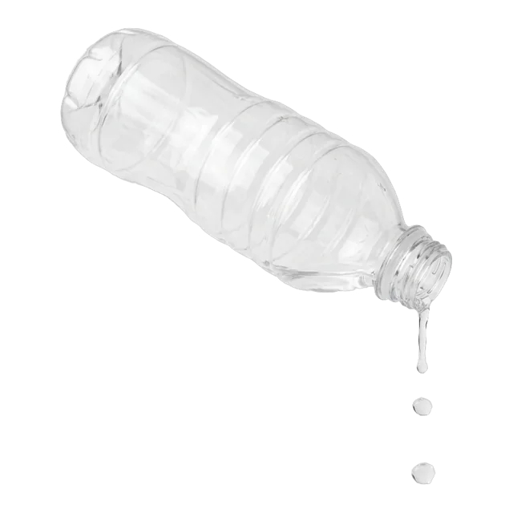
Не оставляй внутри воду, молоко, масло или другую жидкость. Так содержимое бутылки не загрязнит материалы, которые ещё можно отобрать для переработки.
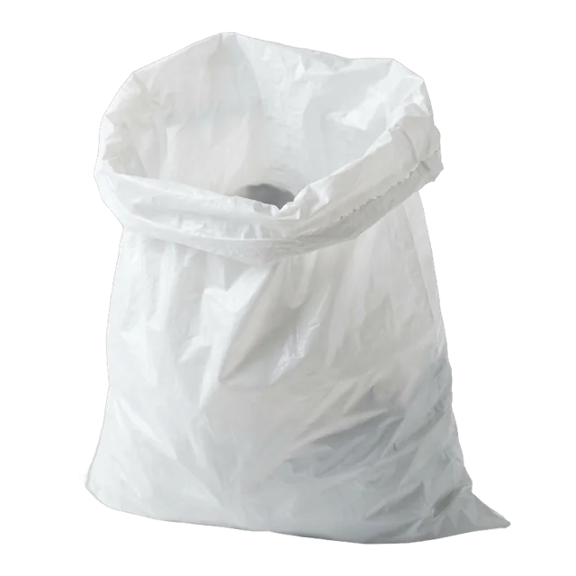
Оставь пакет открытым. Так его содержимое проще освободить на сортировочной линии.
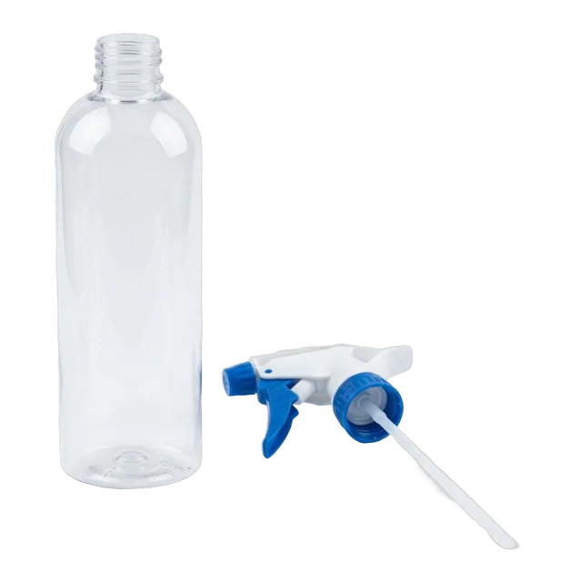
Сними распылитель с флакона перед тем, как его выбросить. Внутри механизма есть металлическая пружинка, поэтому пульверизатор и флакон важно разделить заранее. Так на линии их можно сортировать отдельно.
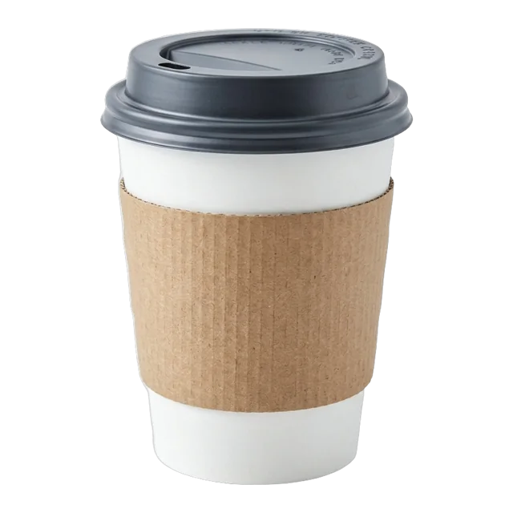
Бумажный стаканчик только выглядит бумажным. Внутри есть защитное покрытие, из-за которого его нельзя перерабатывать вместе с обычной макулатурой. Лучшее решение на каждый день — многоразовая кружка.
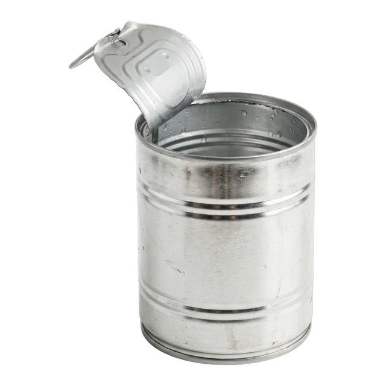
Не заворачивай консервные банки в дополнительный пакет. Так их проще заметить и отобрать на линии.
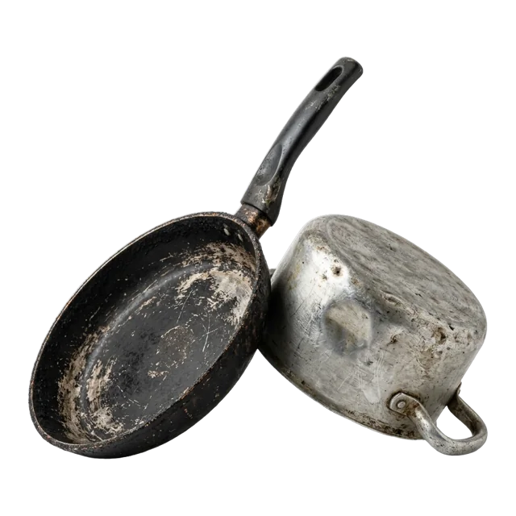
Старая кастрюля или сковородка не требует отдельной упаковки. Её можно отправить в обычный контейнер, дальше она проходит через общий поток.
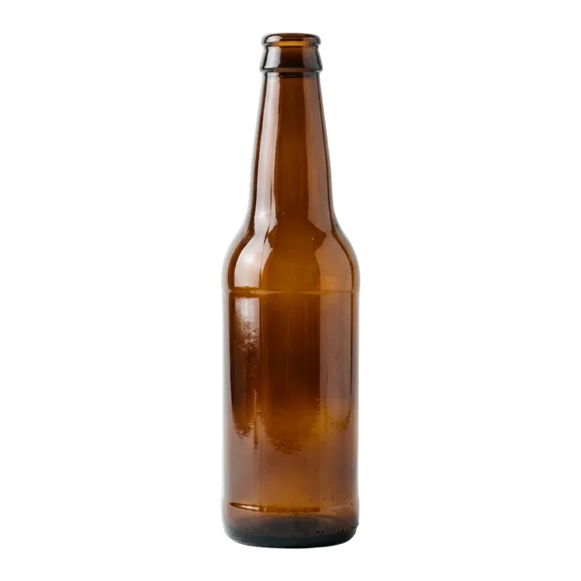
Не разбивай стеклянные бутылки специально. Целое стекло безопаснее для сотрудников сортировочной линии и удобнее в дальнейшей сортировке.
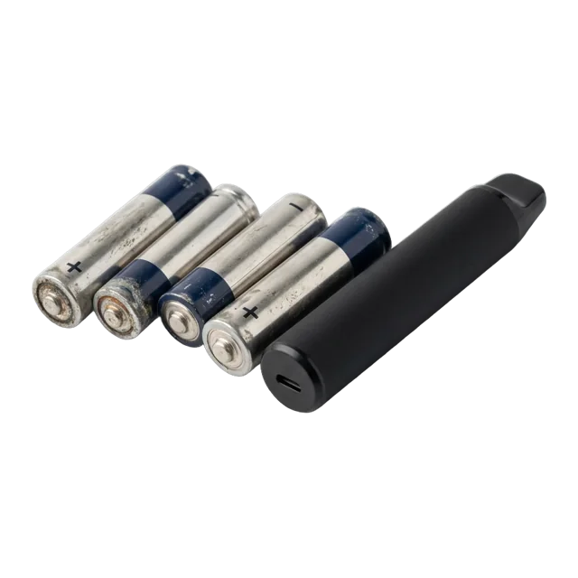
Батарейки содержат токсичные вещества. При неправильном обращении одна батарейка может загрязнить до 1 м³ почвы. Поэтому батарейки нужно сдавать отдельно.
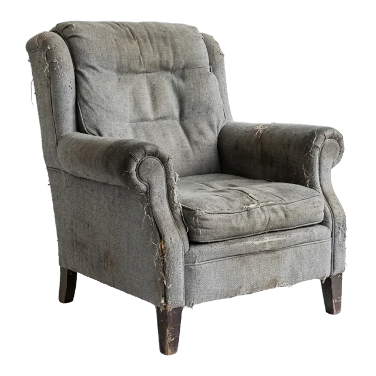
Старая мебель и другие крупные предметы не должны попадать в обычный контейнер. Для них предназначены отдельные отсеки на контейнерной площадке.
Наш пёс Техногрунт подскажет, куда отправить разные вещи и когда обычного контейнера недостаточно.
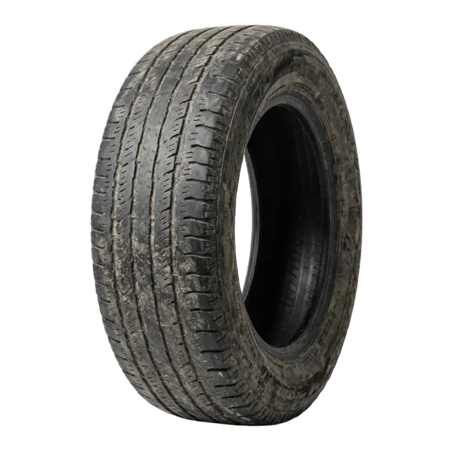
Техногрунт подготовил 10 вопросов о привычках, которые начинаются ещё дома. Проверь, насколько хорошо ты знаешь эти правила.
10 главных правил на одном листе А4. Можно сохранить, распечатать и больше не вспоминать каждый раз, куда деть крышку или зачем сминать бутылку.
Экотехнопарк работает в Стебаево и обслуживает территорию, на которой живут более 650 000 человек. Ежедневно сюда поступает общий поток ТКО, который проходит несколько этапов сортировки и обработки.
Наша задача — отделять материалы, пригодные для дальнейшей переработки, возвращать как можно больше сырья в оборот и сокращать объём, который отправляется на полигон.
Но работа системы начинается ещё до сортировочной линии. Она складывается и из наших повседневных привычек. Поэтому мы открыто показываем, что происходит после контейнера, объясняем сложные процессы простым языком и рассказываем, как правильно обращаться с отходами дома.
Для нас важно, чтобы забота об окружающей среде начиналась с понятных действий. Чем внимательнее мы относимся к тому, что выбрасываем, тем больше материалов можно сохранить в обороте.
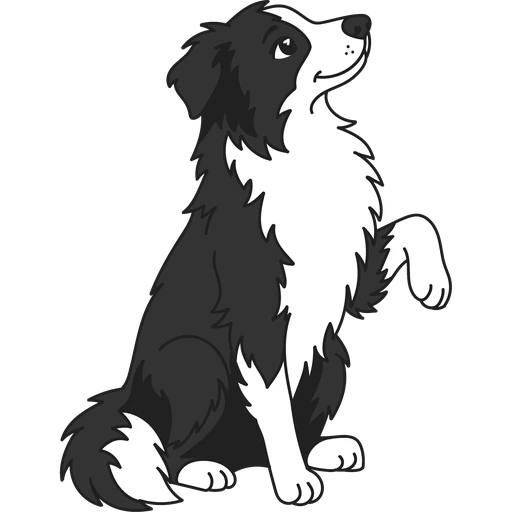
Гав! Я Техногрунт, эксперт по обращению с отходами. Знаю этот завод от ворот до последней линии. Буду показывать, куда едет твой пакет, что происходит внутри и какие привычки действительно помогают.
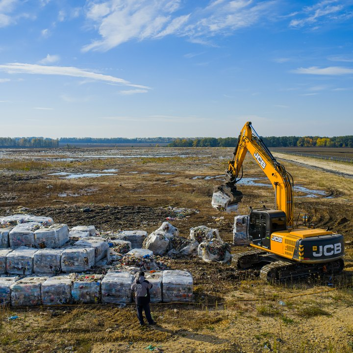
Проследим весь путь и разберёмся, что происходит после того, как мусоровоз забирает содержимое контейнера.
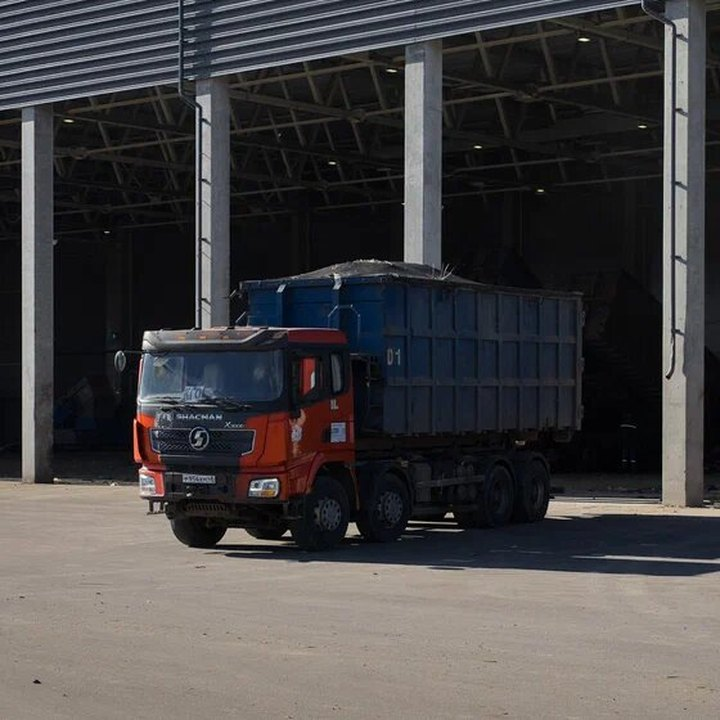
Мусоровоз въезжает на территорию Экотехнопарка, проходит взвешивание и разгружается в приёмном отделении.
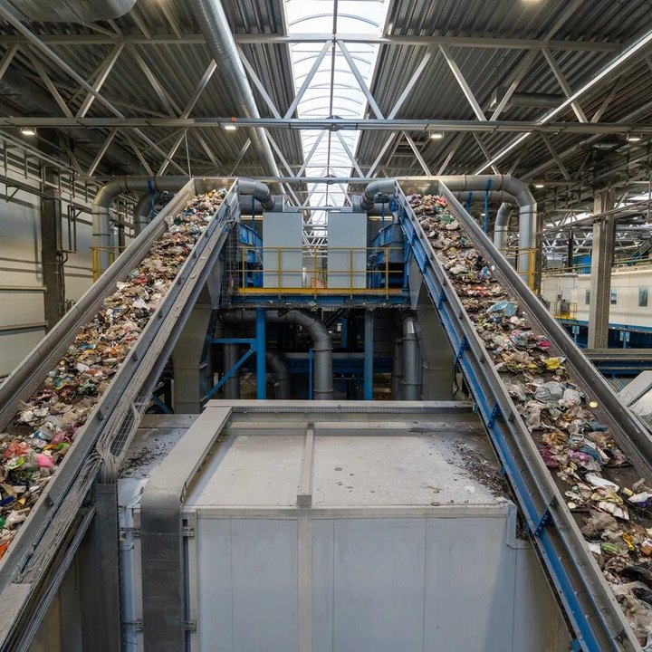
Мусорный пакет поступает на сортировочную линию. Разрыватель раскрывает пакеты, чтобы содержимое можно было сортировать дальше.
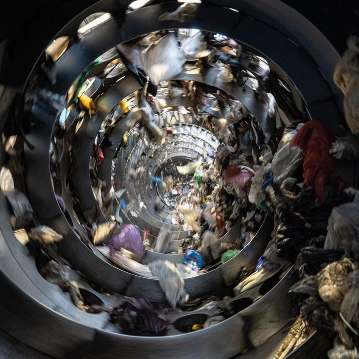
Содержимое пакета проходит несколько этапов сортировки. Барабан, оптические и магнитные сепараторы разделяют материалы на разные фракции. Часть из них дополнительно отбирают вручную сотрудники сортировочной линии.
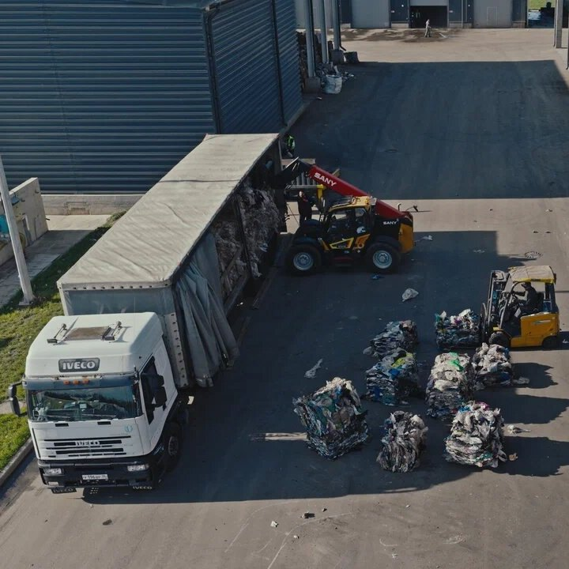
Отобранные материалы прессуют в кипы и готовят к отправке переработчикам. Органическая фракция проходит отдельную обработку.
То, что невозможно вернуть в оборот, направляется на полигон, устроенный в соответствии с действующими требованиями экологической безопасности.
Данные обновляем каждый месяц. Они показывают масштаб работы Экотехнопарка и объём, который проходит через систему сортировки и обработки.
Состояние окружающей среды вокруг Экотехнопарка контролируется постоянно: экологический мониторинг проводится ежемесячно.
На сортировке путь материала не заканчивается. Отобранное вторсырьё прессуют в кипы и передают переработчикам. Там пластик, стекло, металл и бумага становятся сырьём для новых вещей.

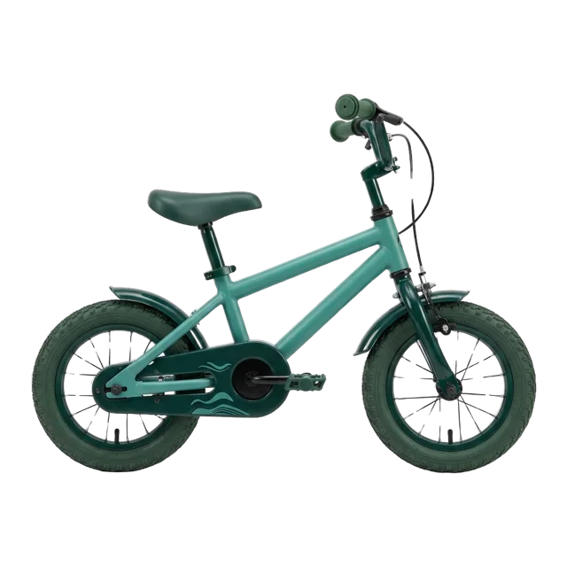
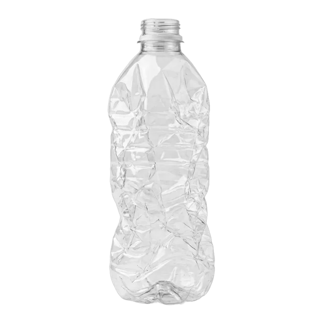
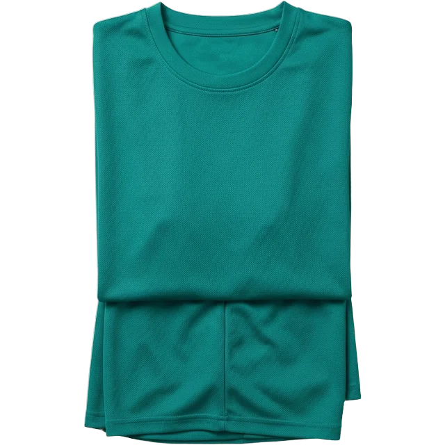

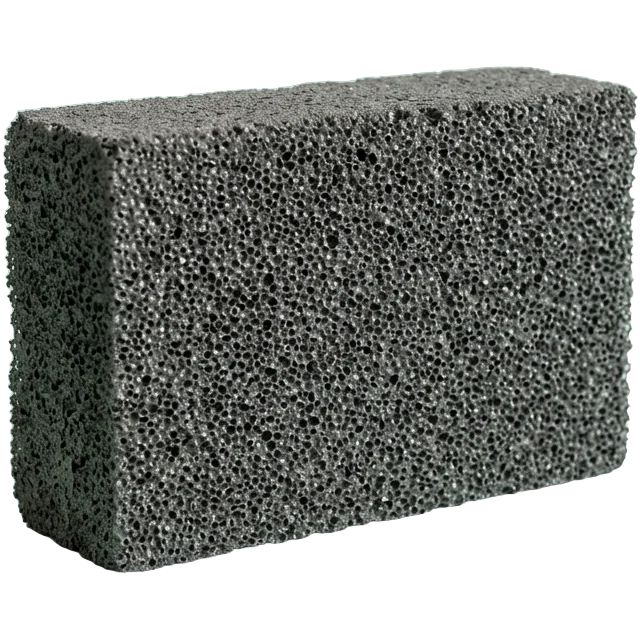
После сортировки и прессования материалы передаём компаниям, которые специализируются на их дальнейшей переработке.
ПНД: канистра и флакон. ПЭТ микс
ПЭТ прозрачный и технический
ПЭТ прозрачный и микс. Входит в «Технониколь»
ПЭТ прозрачный и микс. Острогожск
ПНД: канистра и флакон
ПВД плёнка: прозрачная и микс
Стеклобой
Алюминиевая банка
Картон, макулатура, тетрапак
Отгружаем отобранные фракции: ПЭТ, ПВД, ПНД, плёнку, стеклобой, алюминиевую банку, картон и макулатуру. По вопросам сотрудничества и поставок звоните по общему номеру.
Открути крышку, вылей остатки и сомни бутылку. Несколько простых действий дома помогают материалу лучше пройти сортировку, а всей системе эффективнее возвращать полезные ресурсы в оборот.
В нашей зоне обслуживания весь поток поступает на территорию Экотехнопарка вместе и разделяется уже на сортировочной линии. Но то, в каком состоянии упаковка попадает в контейнер, тоже имеет значение. Пустую и подготовленную упаковку проще отделить от общего потока и направить на дальнейшую переработку. Поэтому дома не нужно сортировать всё на десятки категорий, достаточно следовать нескольким простым правилам.
На предприятии такого типа запах может возникать. При этом состояние окружающей среды контролируется постоянно. Экологический мониторинг проводится ежемесячно.
На линии отбираем ПЭТ, ПВД, ПНД, плёнку, стекло, алюминиевую банку, картон и макулатуру.
Картон и бумага могут быть отобраны на сортировочной линии и направлены переработчикам. Лучше, если бумага остаётся сухой и не загрязнена пищевыми отходами. Отдельно привозить её на завод не нужно.
Отобранные материалы отправляются партнёрам-переработчикам. Пластик превращается в гранулу или волокно, стекло и алюминий переплавляют, бумагу и картон используют как сырьё для новой продукции. Подробнее об этом рассказываем в разделе «Партнёрство».
Да. По вопросам вакансий звоните по общему номеру: +7 (4742) 261-561. Специалисты подскажут, к кому обратиться дальше.
По всем вопросам: +7 (4742) 261-561